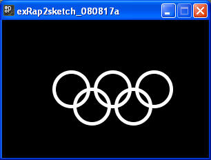
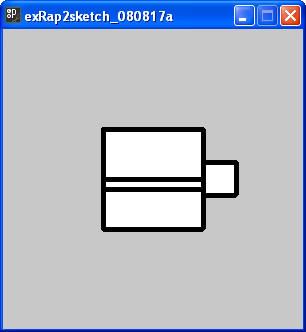
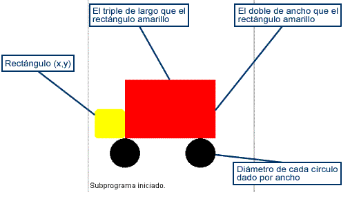

Nota: El tamaño de los dibujos queda a su criterio, lo importante es que traten de respetar las proporciones de los objetos y que muestre el color más parecido.
1. Crea un dibujo con la siguiente apariencia. Para este ejercicio, el tamaño del dibujo debe ser configurable en función del ancho de la pantalla. Es decir que si cambiamos el tamaño de la ventana, el dibujo cambiará de tamaño proporcionalmente (En este caso solo en función del ancho.).

Prueba tu programa con diferente valores para el tamaño de la ventana, es importante recalcar, que el ancho de la ventana debe ser mayor que el alto, para que la apariencia se adecuada. La proporción ancho ventana, diámetro del aro queda a tu criterio.
2. Crea un dibujo con la siguiente apariencia, recuerda que el tamaño del mismo debe ser configurable desde la aplicación, simplemente cambiando valores en variables. Las variables que se pueden configurar desde el principio son:
Posición inicial de la taza (x,y).
Ancho y alto de la taza.

Prueba tu programa con diferente valores para las variables que controlan la posición y el tamaño.
Sección de ejercicios opcionales
3. Realiza las modificaciones necesarias al ejercicio 1 , para que mediante el uso de variables, se pueden configurar los siguiente aspectos:
Posición inicial del logo (x,y).
Diámetro de los aros.
Color de los aros (tono en gris).
Prueba tu programa con diferente valores para las variables que controlan la posición y el tamaño.
4. Escribe un programa que muestre en la pantalla una imagen como la que se muestra a continuación: El programa debe tener 4 variables para guardar información en las que se hará el dibujo.
Esas variables se describen a continuación:
| Variable | Descripción |
| posX |
Variable entera que representa la coordenada x de la esquina superior izquierda de la imagen (rectángulo) |
| posY | Variable entera que representa la coordenada y de la esquina superior izquierda de la imagen (rectángulo) |
| tamanio (no se puede usar ñ) | Representa el ancho y alto del rectángulo, así como el diámetro del círculo |
| gruesoPluma | Define el grueso de las líneas a dibujar |

Nota: Para crear colores, se puede utilizar el método fill con 3 entradas (de 0 a 255 cada una), las cuales definen la combinación RBG del color deseado. RGB (Red - Green - Blue). Es decir que si se desea dibujar alguna figura de color azul, se necesita utilizar la instrucción fill(0, 0, 255).